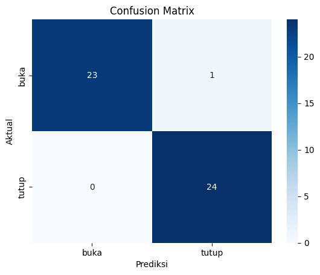

VOICE DETECTION#
Proyek ini bertujuan untuk membangun sistem deteksi suara sederhana yang dapat mengenali dua perintah suara dalam Bahasa Indonesia: “buka” dan “tutup”.
Dataset terdiri dari 100 file audio .wav untuk masing-masing kelas.
Tahapan Proyek#
Import library
Load data audio
Ekstraksi fitur menggunakan TSFEL
Labeling dan pembentukan dataset
Training model klasifikasi
Evaluasi performa model
Prediksi suara baru
IMPORT LIBRARY#
pip install sounddevice
Requirement already satisfied: sounddevice in /usr/local/python/3.12.1/lib/python3.12/site-packages (0.5.3)
Requirement already satisfied: CFFI>=1.0 in /home/codespace/.local/lib/python3.12/site-packages (from sounddevice) (1.17.1)
Requirement already satisfied: pycparser in /home/codespace/.local/lib/python3.12/site-packages (from CFFI>=1.0->sounddevice) (2.22)
[notice] A new release of pip is available: 25.1.1 -> 25.3
[notice] To update, run: python3 -m pip install --upgrade pip
Note: you may need to restart the kernel to use updated packages.
import os
import librosa
import numpy as np
import soundfile as sf
import matplotlib.pyplot as plt
from sklearn.model_selection import train_test_split
from sklearn.preprocessing import LabelEncoder, StandardScaler
from sklearn.svm import SVC
from sklearn.metrics import classification_report, confusion_matrix, accuracy_score
import seaborn as sns
import sounddevice as sd
PENJELASAN DATASET#
Dataset terdiri dari dua kelas suara:
data/buka/ → berisi 100 file .wav untuk kata “buka”
data/tutup/ → berisi 100 file .wav untuk kata “tutup”
Semua file sudah melalui proses augmentasi sebelumnya agar data lebih beragam dan seimbang.
Ekstraksi Fitur MFCC#
Untuk mengenali pola suara, setiap file audio diubah menjadi fitur numerik.
Digunakan fitur MFCC (Mel-Frequency Cepstral Coefficients) yang umum dalam pengenalan suara manusia.
def extract_features(file_path):
y, sr = librosa.load(file_path, sr=None)
mfcc = librosa.feature.mfcc(y=y, sr=sr, n_mfcc=13)
mfcc_mean = np.mean(mfcc.T, axis=0)
return mfcc_mean
X, y = [], []
for label in ['buka', 'tutup']:
folder = f'data/{label}'
for file in os.listdir(folder):
if file.endswith('.wav'):
file_path = os.path.join(folder, file)
features = extract_features(file_path)
X.append(features)
y.append(label)
X = np.array(X)
y = np.array(y)
Persiapan Data untuk Pelatihan#
Dataset dibagi menjadi dua bagian:
80% untuk pelatihan
20% untuk pengujian
Label dikonversi ke bentuk numerik menggunakan LabelEncoder, dan fitur dinormalisasi menggunakan StandardScaler.
encoder = LabelEncoder()
y_encoded = encoder.fit_transform(y)
scaler = StandardScaler()
X_scaled = scaler.fit_transform(X)
X_train, X_test, y_train, y_test = train_test_split(X_scaled, y_encoded, test_size=0.2, random_state=42, stratify=y_encoded)
Pelatihan Model (Support Vector Machine)#
Model yang digunakan adalah SVM (Support Vector Machine) karena efektif untuk klasifikasi dengan fitur berukuran kecil-menengah seperti MFCC.
model = SVC(kernel='rbf', C=10, gamma='scale')
model.fit(X_train, y_train)
SVC(C=10)In a Jupyter environment, please rerun this cell to show the HTML representation or trust the notebook.
On GitHub, the HTML representation is unable to render, please try loading this page with nbviewer.org.
Parameters
| C | 10 | |
| kernel | 'rbf' | |
| degree | 3 | |
| gamma | 'scale' | |
| coef0 | 0.0 | |
| shrinking | True | |
| probability | False | |
| tol | 0.001 | |
| cache_size | 200 | |
| class_weight | None | |
| verbose | False | |
| max_iter | -1 | |
| decision_function_shape | 'ovr' | |
| break_ties | False | |
| random_state | None |
Evaluasi Model#
Setelah pelatihan, model diuji menggunakan data uji (20% dari total).
Ditampilkan akurasi, laporan klasifikasi, dan confusion matrix untuk melihat seberapa baik model mengenali suara “buka” dan “tutup”.
y_pred = model.predict(X_test)
acc = accuracy_score(y_test, y_pred)
print(f" Akurasi Model: {acc:.2%}\n")
print(classification_report(y_test, y_pred, target_names=encoder.classes_))
cm = confusion_matrix(y_test, y_pred)
sns.heatmap(cm, annot=True, fmt='d', xticklabels=encoder.classes_, yticklabels=encoder.classes_, cmap='Blues')
plt.title('Confusion Matrix')
plt.xlabel('Prediksi')
plt.ylabel('Aktual')
plt.show()
Akurasi Model: 97.92%
precision recall f1-score support
buka 1.00 0.96 0.98 24
tutup 0.96 1.00 0.98 24
accuracy 0.98 48
macro avg 0.98 0.98 0.98 48
weighted avg 0.98 0.98 0.98 48

Rekam Suara Langsung & Simpan#
Sekarang kita tambahkan fitur rekam suara langsung.
Kamu akan merekam suara melalui mikrofon selama beberapa detik (misalnya 2–3 detik). File hasil rekaman disimpan dalam format .wav, lalu diprediksi apakah itu suara “buka” atau “tutup”.
def record_voice(duration=3, sr=22050, output_path='rekaman.wav'):
print(f" Mulai merekam selama {duration} detik...")
audio = sd.rec(int(duration * sr), samplerate=sr, channels=1, dtype='float32')
sd.wait()
sf.write(output_path, audio, sr)
print(f" Rekaman disimpan sebagai {output_path}")
return output_path
Prediksi Suara Baru#
def predict_audio(file_path):
feat = extract_features(file_path)
feat_scaled = scaler.transform([feat])
pred = model.predict(feat_scaled)
hasil = encoder.inverse_transform(pred)[0]
print(f" Prediksi suara: {hasil.upper()}")
return hasil
Uji Coba Sistem (Rekam dan Prediksi)#
Jalankan sel berikut:
Rekam suara kamu (katakan “buka” atau “tutup”)
Model akan memprediksi hasilnya secara otomatis
# Rekam dan prediksi suara baru
rekaman_path = record_voice(duration=3)
hasil_prediksi = predict_audio(rekaman_path)
Mulai merekam selama 3 detik...
---------------------------------------------------------------------------
PortAudioError Traceback (most recent call last)
Cell In[9], line 2
1 # Rekam dan prediksi suara baru
----> 2 rekaman_path = record_voice(duration=3)
3 hasil_prediksi = predict_audio(rekaman_path)
Cell In[7], line 3, in record_voice(duration, sr, output_path)
1 def record_voice(duration=3, sr=22050, output_path='rekaman.wav'):
2 print(f" Mulai merekam selama {duration} detik...")
----> 3 audio = sd.rec(int(duration * sr), samplerate=sr, channels=1, dtype='float32')
4 sd.wait()
5 sf.write(output_path, audio, sr)
File /usr/local/python/3.12.1/lib/python3.12/site-packages/sounddevice.py:279, in rec(frames, samplerate, channels, dtype, out, mapping, blocking, **kwargs)
276 ctx.read_indata(indata)
277 ctx.callback_exit()
--> 279 ctx.start_stream(InputStream, samplerate, ctx.input_channels,
280 ctx.input_dtype, callback, blocking, **kwargs)
281 return out
File /usr/local/python/3.12.1/lib/python3.12/site-packages/sounddevice.py:2653, in _CallbackContext.start_stream(self, StreamClass, samplerate, channels, dtype, callback, blocking, **kwargs)
2650 def start_stream(self, StreamClass, samplerate, channels, dtype, callback,
2651 blocking, **kwargs):
2652 stop() # Stop previous playback/recording
-> 2653 self.stream = StreamClass(samplerate=samplerate,
2654 channels=channels,
2655 dtype=dtype,
2656 callback=callback,
2657 finished_callback=self.finished_callback,
2658 **kwargs)
2659 self.stream.start()
2660 global _last_callback
File /usr/local/python/3.12.1/lib/python3.12/site-packages/sounddevice.py:1452, in InputStream.__init__(self, samplerate, blocksize, device, channels, dtype, latency, extra_settings, callback, finished_callback, clip_off, dither_off, never_drop_input, prime_output_buffers_using_stream_callback)
1420 def __init__(self, samplerate=None, blocksize=None,
1421 device=None, channels=None, dtype=None, latency=None,
1422 extra_settings=None, callback=None, finished_callback=None,
1423 clip_off=None, dither_off=None, never_drop_input=None,
1424 prime_output_buffers_using_stream_callback=None):
1425 """PortAudio input stream (using NumPy).
1426
1427 This has the same methods and attributes as `Stream`, except
(...) 1450
1451 """
-> 1452 _StreamBase.__init__(self, kind='input', wrap_callback='array',
1453 **_remove_self(locals()))
File /usr/local/python/3.12.1/lib/python3.12/site-packages/sounddevice.py:828, in _StreamBase.__init__(self, kind, samplerate, blocksize, device, channels, dtype, latency, extra_settings, callback, finished_callback, clip_off, dither_off, never_drop_input, prime_output_buffers_using_stream_callback, userdata, wrap_callback)
825 samplerate = isamplerate
826 else:
827 parameters, self._dtype, self._samplesize, samplerate = \
--> 828 _get_stream_parameters(kind, device, channels, dtype, latency,
829 extra_settings, samplerate)
830 self._device = parameters.device
831 self._channels = parameters.channelCount
File /usr/local/python/3.12.1/lib/python3.12/site-packages/sounddevice.py:2735, in _get_stream_parameters(kind, device, channels, dtype, latency, extra_settings, samplerate)
2732 if samplerate is None:
2733 samplerate = default.samplerate
-> 2735 info = query_devices(device)
2736 if channels is None:
2737 channels = info['max_' + kind + '_channels']
File /usr/local/python/3.12.1/lib/python3.12/site-packages/sounddevice.py:572, in query_devices(device, kind)
570 info = _lib.Pa_GetDeviceInfo(device)
571 if not info:
--> 572 raise PortAudioError(f'Error querying device {device}')
573 assert info.structVersion == 2
574 name_bytes = _ffi.string(info.name)
PortAudioError: Error querying device -1